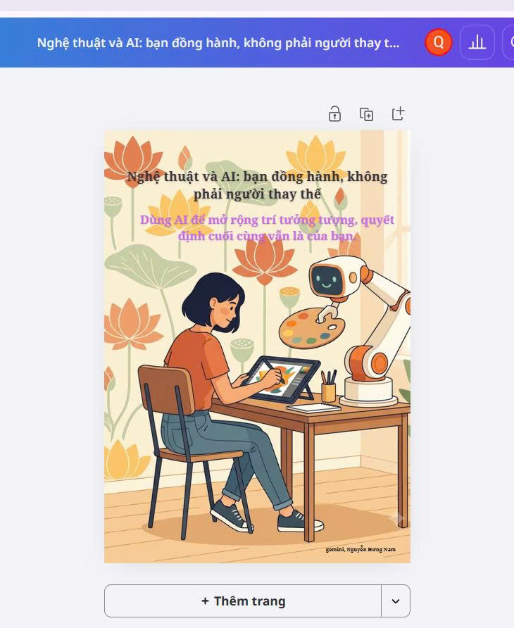
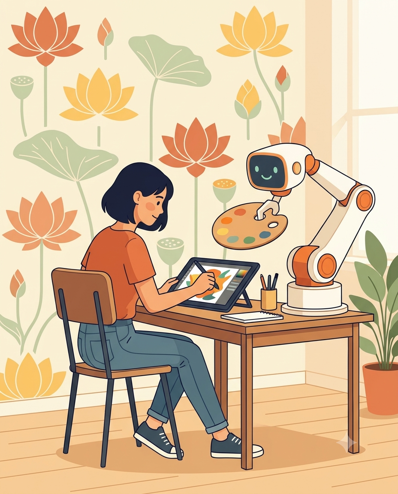

Bài 5 · Chương 5: Sáng tạo nội dung số · Điểm tối đa 1,0
Bài 5: Sử dụng AI tạo sinh để hỗ trợ sáng tạo nội dung
a) Mục tiêu bài tập
Yêu cầu của bài tập: sử dụng AI tạo sinh để hỗ trợ tạo ra một sản phẩm nội dung số hoàn thiện (hình ảnh, video hoặc bài viết) và trưng bày sản phẩm đó cùng quá trình thực hiện.
Sản phẩm đã chọn: một áp phích (poster) kèm bài viết ngắn với thông điệp "Nghệ thuật và AI: bạn đồng hành, không phải người thay thế". Kỹ năng được rèn luyện: viết prompt cho AI tạo ảnh và AI soạn văn bản, biên tập, chỉnh sửa, khai báo việc sử dụng AI.
b) Tóm tắt quá trình thực hiện
Các bước thực hiện
- Xác định mục đích và đối tượng: áp phích truyền thông cho sinh viên về cách dùng AI trong sáng tạo nghệ thuật.
- Dùng AI văn bản để lên dàn ý và bản nháp bài viết ngắn; sinh viên đọc, chỉnh sửa lại giọng văn và kiểm tra nội dung.
- Viết prompt tạo ảnh minh họa, tạo 4 phương án và chọn một phương án phù hợp nhất.
- Chỉnh sửa trong Canva: cắt khung, thêm tiêu đề và thông điệp bằng chữ do sinh viên tự viết, thêm dòng khai báo việc sử dụng AI.
- Kiểm tra bản quyền (không dùng tên nghệ sĩ hay nhân vật có bản quyền trong prompt), xuất ảnh PNG hoặc PDF và đưa lên Portfolio.
Công cụ đã sử dụng
- Gemini: tạo hình minh họa cho áp phích
- Gemini: lên dàn ý và soạn bản nháp bài viết
- Phần mềm thiết kế (ví dụ Canva) để biên tập, thêm chữ
Khó khăn và cách giải quyết
| Khó khăn | Cách giải quyết |
|---|---|
| Chữ trong ảnh do AI tạo bị lỗi hoặc không đọc được. | Yêu cầu AI tạo ảnh không có chữ, sau đó tự thêm chữ trong Canva. |
| Kết quả đầu tiên không đúng ý, hình khối kỳ lạ. | Bổ sung mô tả về bố cục, màu sắc, góc nhìn và loại bỏ yếu tố không mong muốn; tạo lại nhiều lần. |
| Lo ngại về bản quyền và tính nguyên bản. | Không nhắc tên tác giả hay nhân vật có bản quyền, ghi rõ công cụ AI và mục đích sử dụng. |
Khai báo sử dụng AI: Mình dùng Gemini để tạo hình minh họa và soạn nháp bài viết ngắn. Mình tự viết prompt, chọn phương án, chỉnh sửa giọng văn, kiểm tra nội dung và hoàn thiện áp phích.
c) Sản phẩm cuối cùng
a) Sản phẩm: áp phích

Chú thích khai báo: Hình minh họa được tạo với sự hỗ trợ của Gemini và được biên tập, bổ sung chữ bởi Nguyễn Hưng Nam.
b) Prompt tạo ảnh đã sử dụng
Tranh minh họa phong cách phẳng, tối giản, bố cục dọc tỉ lệ 4:5. Một sinh viên đang vẽ trên máy tính bảng, bên cạnh là một cánh tay robot thân thiện cầm bảng màu. Nền có họa tiết hoa sen cách điệu, màu ấm (cam, vàng, xanh lá nhạt). Không có chữ, không có logo, không dùng phong cách của nghệ sĩ cụ thể.

c) Bài viết kèm theo (bản nháp có sự hỗ trợ của AI, đã biên tập)
Nghệ thuật và AI: bạn đồng hành, không phải người thay thế
Mỗi lần có một công cụ mới xuất hiện, từ máy ảnh đến phần mềm đồ họa, nghệ thuật lại phải trả lời câu hỏi về vai trò của con người. Trí tuệ nhân tạo tạo sinh khiến câu hỏi ấy trở nên gần gũi hơn bao giờ hết. Với người học nghệ thuật, AI có thể giúp thử nhanh nhiều ý tưởng bố cục, màu sắc và phong cách trước khi bắt tay vào thực hiện thật.
Tuy nhiên, các nghiên cứu về giáo dục nghệ thuật đều nhấn mạnh rằng AI nên hỗ trợ chứ không thay thế các thực hành truyền thống và quyền tự chủ sáng tạo của người học (Blair, 2025; Heaton, Low và Chen, 2024). Ý tưởng, cảm xúc và trách nhiệm với sản phẩm vẫn thuộc về con người. AI cũng có thể cho kết quả thiên lệch hoặc gây tranh cãi về bản quyền, vì vậy cần ghi rõ nguồn và việc sử dụng công cụ (Miao và Holmes, 2023).
Thông điệp của áp phích này vì thế rất đơn giản: hãy dùng AI như một người bạn để mở rộng trí tưởng tượng, và luôn giữ phần quyết định cuối cùng cho chính mình.
d) Khai báo sử dụng AI
| Công cụ | Mục đích | Phần do sinh viên thực hiện |
|---|---|---|
| Gemini (tạo ảnh) | Tạo hình minh họa | Viết prompt, chọn phương án, biên tập, thêm chữ |
| Gemini (soạn văn bản) | Gợi ý dàn ý và bản nháp bài viết | Chỉnh sửa giọng văn, kiểm tra nội dung, chốt bản cuối |
Tài liệu tham khảo (Harvard)
- Blair, J. (2025) 'Art meets AI: exploring the opportunities and challenges of integrating artificial intelligence in the art classroom', American Journal of STEM Education: Issues and Perspectives, 14, tr. 59–74. doi:10.32674/5hm64807.
- Heaton, R., Low, J.H. và Chen, V. (2024) 'AI art education – artificial or intelligent? Transformative pedagogic reflections from three art educators in Singapore', Pedagogies: An International Journal, 19(4). doi:10.1080/1554480X.2024.2395260.
- Miao, F. và Holmes, W. (2023) Guidance for generative AI in education and research. Paris: UNESCO. Truy cập tại: https://unesdoc.unesco.org/ark:/48223/pf0000386693 (Ngày truy cập: 24/10/2026).